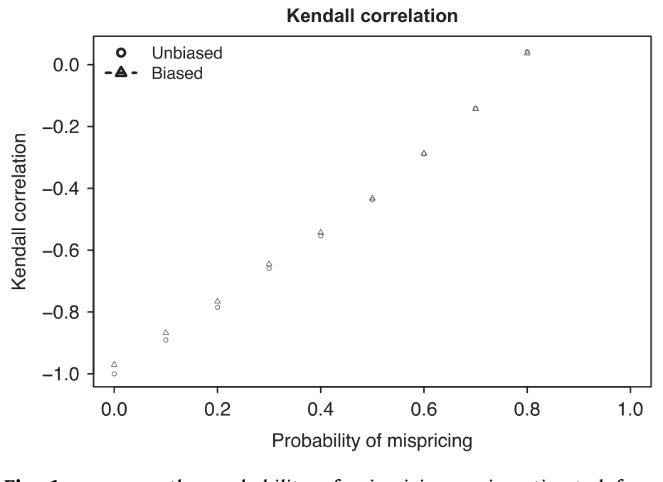
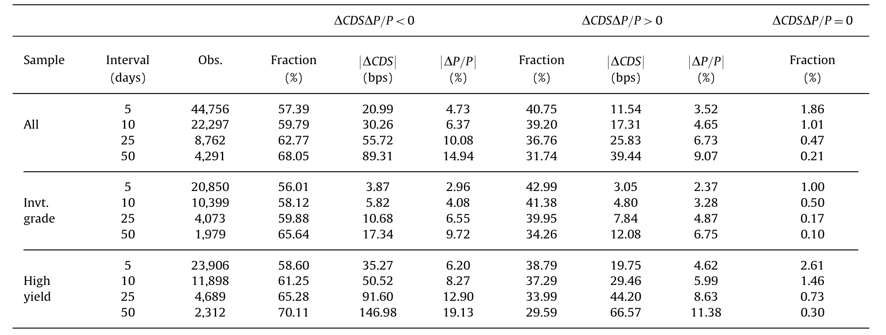
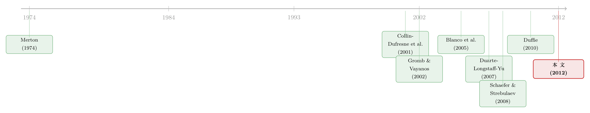

同一家公司，股票和它的「违约保单」，真的在同一条船上吗？
本文读的是 Kapadia & Pu (2012, Journal of Financial Economics)：同一家公司的股票市场与信用市场，在短期里其实经常「各说各话」——5 个交易日的窗口里，有 41% 的股价与 CDS 利差变动方向「不该同向却同向」，构成了 Merton 模型意义上的定价背离；其中相当一部分是真正的套利机会（简单的资本结构套利能赚到约 6% 的年化超额收益）。而这种「不整合」的时间变化，可以被资金与交易层面的套利障碍——信用市场流动性、股票市场流动性、特质风险——解释掉相当大一块。
1 一个本不该存在的矛盾
先从一个几乎是「定义级别」的事实说起。
Merton（1974）那个著名的结构化信用风险模型告诉我们一件很硬的事：一家公司的股票，本质上是「公司资产价值」上的一份看涨期权；而它的债务，则是「无风险债 + 一份卖出的看跌期权」。既然股和债都是同一个底层资产（公司价值 \(A\)）的函数，那么资产价值一动，股价和债券价值就必须精确地、同步地联动——否则就留下了无风险套利的口子。换句话说，按照理论，股票收益和信用利差变化之间，应该是一种近乎机械的对应关系。
更何况，现实里还真有一大批人专门干这件事。对冲基金、私募，常年在玩一种叫 资本结构套利 (capital structure arbitrage) 的策略：盯着同一家公司的股和债，一旦两边「对不上」，就做多便宜的一头、做空贵的一头，赌它们收敛。有活跃的套利者，加上理论上完美整合的两个市场，股票收益和信用利差的变化，理应高度相关。
然而，现实给了一记响亮的耳光。
Collin-Dufresne, Goldstein, and Martin（2001，下称 CDGM）把月度信用利差变化对股票收益等一堆变量做回归，调整后的 \(R^2\) 只有 17% 到 34%。他们自己都看不下去，在文章里写道：
"Given that structural framework models risky debt as a derivative security which in theory can be perfectly hedged, this adjusted \(R^2\) seems extremely low."
Blanco, Brennan, and Marsh（2005）换成 CDS 周度数据再做一遍，结论更扎心：四分之三的变动，模型解释不了。
到这里，故事似乎可以收尾了：结构化模型不行，股和债其实是两个「各管各」的市场。（关于股债到底是不是听同一个声音说话，可参见《股和债，到底在听同一个人说话吗？》。）
2 但真正的麻烦，是另一篇论文
接着，一个让人头疼的反转出现了。
Schaefer and Strebulaev（2008）做了一件几乎是「打脸 CDGM」的工作：他们去检验 Merton 模型给出的对冲比率（即债券收益对股票收益的敏感度），发现这个敏感度在量级上，和数据高度吻合。也就是说，如果你真用 Merton 模型去对冲一只债券，它给的对冲比率是对的。
于是我们被夹在两个都很可信的结论中间，进退两难：
- 一方面，Merton 模型给的对冲比率是对的（Schaefer-Strebulaev）；
- 另一方面，Merton 模型几乎解释不了股债之间的相关性（CDGM、Blanco 等）。
一个模型，怎么可能同时「对冲比率对」又「解释不了整合」？这就是本文要解决的核心谜题。
过去文献给过两种调和方案。第一种是「财富转移」：当公司波动率、债务发生意外变化时，财富会在股东和债权人之间转移，于是股和债出现相对价格变动——但这不是套利机会，只是分蛋糕的方式变了。第二种是「非结构化定价」：信用市场可能在给一个股票市场不定价的因子（比如信用市场特有的系统性流动性因子，见 Longstaff, Mithal, and Neis, 2005；Chen, Lesmond, and Wei, 2007）定价，那两个市场本就不该整合。
这两种解释有一个共同的潜台词：Merton 模型测出来的「定价背离」，根本不是异象——拿真实的信用定价模型去衡量，它们都是合理的。
本文偏偏要提出第三种假说，而且是一个更「行为金融」味道的假说：
短期的 Merton 模型定价背离，至少有一部分是真正的异象；而股债两个市场之所以「不整合」，是因为存在 有限套利 (limited arbitrage) ——套利者受制于资金约束、交易成本、特质风险，没法投入足够的资本把这些异象抹平。
这才是本文的「核心」。后面所有的方法、数据、回归，都是为了把这一句话钉死。
3 关键一步：怎么把「市场整合」量出来？
要检验「有限套利解释了整合的时间变化」，你首先得有一把尺子，能量出某家公司在某段时间里，股市和信用市场整合到什么程度。\(R^2\) 不行——它被股债之间的非线性关系污染，即使没有任何错误定价，\(R^2\) 也小于 1，而且非线性程度还随利差变化，根本没法用它做时间序列上的比较。
作者的办法非常聪明：只看「同向 / 反向」，不看「幅度」。
在 Merton 世界里，公司价值上升，股价上升，债券价值上升，于是 CDS 利差下降。所以正常情况下，股价变化 \(\Delta P\) 和 CDS 利差变化 \(\Delta CDS\) 应当反向。反过来，如果某一对观测里 \(\Delta P\) 和 \(\Delta CDS\) 居然同向了（乘积为正），那就出现了一次 Merton 模型意义上的套利机会。
把这件事数出来，就是论文的核心度量。先定义在间隔 \(t\) 上的变化：
$$\Delta CDS^{t}_{i,k} = CDS_i(k+t) - CDS_i(k), \qquad \Delta P^{t}_{i,k} = P_i(k+t) - P_i(k)$$
然后，把所有可能的「时间对」上出现的同向情形，统统数一遍：
这个 \(\hat{k}_i\) 数的是「同向（背离）」的对数。作者举了个干净的例子：股价序列 \(P(1)=100, P(2)=80, P(3)=90\)；如果对应的 CDS 利差是 $50, 30, 60$ bps，那两个市场比较整合；但如果 CDS 利差是 $50, 30, 40$ bps，那么在 $[1,2]$、$[2,3]$、$[1,3]$ 每一对观测上，股和债都同向了——三对全是背离。
这个度量的妙处有几层：第一，它是非参数的，不受非线性影响；第二，它考虑了 \(M\) 个观测点构成的所有配对，因此与「观测窗口长短」无关，这对研究「背离在不同持有期下如何衰减」特别有用；第三，也是最关键的——它和 Kendall（1938）的秩相关有一一对应关系。定义
$$\kappa = \frac{4\hat{k}}{M(M-1)} - 1$$
这样 \(\kappa\) 就是股价和 CDS 利差之间的 Kendall 相关系数。于是我们有了一个极其干净的原假设：
在完全没有错误定价时，\(\kappa = -1\)（股与债完美反向）。\(\kappa\) 越往正的方向走，市场越不整合。
这就把一个含糊的「整合程度」，变成了一个有标准统计理论支撑、可做假设检验的量。
那么这把尺子灵不灵？作者用模拟来回答。他们让公司在每个时点以一个固定概率发生错误定价（同时小心地处理了「债务到期再融资」会带来的偏误），看 \(\kappa\) 如何随错误定价概率变化。结果如图 1 所示：\(\kappa\) 随背离概率单调上升，而且在时间窗口短于一年时尤其敏感——这恰好契合本文研究「短期背离」的目标。顺带一提，3% 到 10% 的股息率只让 \(\kappa\) 偏移 0.007 到 0.024，相比错误定价的影响可以忽略；季度内债务账面价值变化也不到 2%，同样不构成威胁。

Figure 1: k versus the probability of mispricing. k is estimated from 0.60 (cid:2)0.28 (cid:2)0.27 (cid:2)0.28
4 数据
作者用的是一个 214 家公司、跨越 2001–2009 年的面板。CDS 数据来自 Markit（五年期 CDS 利差是主力变量），股价来自常规来源。CDS-股票这个组合之所以是「绝佳的实验室」，不只是因为它体量大，更因为这里聚集了活跃且老练的套利者——如果连这里都存在系统性的、可被套利障碍解释的背离，那「有限套利」的故事就格外有说服力。
值得一提的一个「定标」数字：把 2001–2009 年间各公司平均的五年期 CDS 利差，对公司平均债务比率和股票收益波动率做横截面回归，调整后 \(R^2\) 高达 56%。也就是说，解释利差的水平，结构化因子干得相当好；问题始终出在解释利差的变化和整合上。
5 三个发现，把故事钉死
发现一：短期背离非常普遍。 在 5 个交易日的窗口里，41% 的相对股价-CDS 利差变动被判为背离。背离会随持有期拉长而减少——到 50 个交易日，背离比例大约低 9%。而且这些背离都伴随着经济上很大的价格变动：50 日窗口里的背离，平均对应 9.1% 的绝对股票收益，以及 39 bps 的、方向错误的 CDS 利差绝对变化。它们也无法用期权隐含波动率或债务水平的变化解释掉——恰恰相反，当隐含波动率上升（下降）与股价下跌（上涨）撞在一起时，背离反而更多。

Table 4: reports the frequency of pricing discrepancies
发现二：相当一部分背离是「真异象」。 这是反财富转移、反非结构化定价两种假说的关键证据。作者构造了一个简单的资本结构套利策略：观察到短期背离后，押注两个市场收敛。结果，这个策略在 2001–2009 年赚到了约 6% 的年化超额收益。市场真的会收敛——这说明背离不是「拿错了模型」产生的假象，而是实打实的、本不该出现的赚钱机会。（这一点与《股与债，真的「各说各话」吗？——一个结构模型如何为期权市场的「不一致」翻案》形成了有趣的对话：一边强调不一致是真异象，一边试图为不一致翻案。）
注意这里的逻辑链条：在没有套利风险或成本的世界里，这些频繁出现的背离会构成稳定盈利、因而不可能长期存在的机会。它们偏偏存在了——这本身就是「有限套利」在起作用的间接证据。
发现三：整合的时间变化，被套利障碍解释。 这是论文的落脚点。作者在控制了「财富转移」可能造成的相对价格变动之后，把 \(\kappa\)（整合度）对一系列公司层面的套利障碍做面板回归。结论很整齐：
- 一家公司 CDS 市场流动性下降、特质风险上升，都会导致股债整合度下降；
- 对投资级公司，股票市场流动性更高则整合度更高；
- 2008–2009 金融危机期间，流动性枯竭使得那些更高风险、更高波动的公司整合度尤其低；
- 控制变量里，股票波动率本身显著为正——波动率上升反而让两个市场更整合。
量级上：信用市场流动性变动一个标准差，能解释一家典型公司股债整合度变异的 9.5%；加上特质风险和股票波动率，这三个变量合起来解释了约 29% 的变异。在「解释整合的时间变化」这件 CDGM 没做成的事上，这是一个相当可观的成绩。
6 暗线：为什么是「资金流动性」？
最后，本文有一处常被略过、但其实很关键的理论铺垫，值得单独拎出来——为什么套利障碍会随公司特征而变化？
作者从套利者的保证金约束出发。Gromb and Vayanos（2002）早就指出，无法跨头寸交叉保证（cross-margin）是资金流动性的一大约束：收敛交易的多头那条腿，不能拿来抵押空头那条腿，每条腿都得分别缴保证金。设套利者在股票和债券上的头寸占公司股本 \(P\)、债务 \(B\) 的比例为 \(|n_P|\)、\(|n_B|\)，保证金率（haircut）为 \(m_P\)、\(m_B\)，则总保证金为：
$$W = m_P\,|n_P|\,P + m_B\,|n_B|\,B = |n_P|\,P\left(m_P + m_B\,\frac{\partial P/\partial A}{\partial B/\partial A}\,\frac{B}{P}\right)$$
这个式子说明，给定股票头寸 \(|n_P|P\)，资助一次收敛交易所需的总保证金，取决于三样东西：股票保证金率 \(m_P\)、债券（或 CDS）保证金率 \(m_B\)，以及那个 elasticity \((B/P)(\partial P/\partial A)/(\partial B/\partial A)\)。而 FINRA 对卖出 CDS 保护的保证金，是按信用风险阶梯收的（0–100 bps 收 4%，100–300 收 7%，一路到 700 bps 以上收 25%；投机级 CDS 的保证金大约是投资级的三到六倍）。
但真正驱动横截面差异的，不是保证金率本身，而是 elasticity。参考 Schaefer and Strebulaev（2008）的 Table 5：对一家准杠杆 0.20、资产波动率 20% 的投资级公司，债券收益对股票收益的敏感度是 0.70；而对准杠杆 0.50、资产波动率 40% 的公司，这个数字飙到 24.17。也就是说，债券越安全，对冲同样一笔股票头寸所需的债券头寸变化越剧烈。于是公司的信用风险，就成了资助套利所需股本的一个间接代理——信用越差的公司，套利越「烧钱」。
把这条暗线和特质风险（Pontiff, 2006；Shleifer and Vishny, 1997）、市场流动性（Roll, 1984；Amihud, 2002）、慢资本（Duffie, 2010）合起来，就构成了「为什么整合度会随公司、随时间而变」的完整机制。（关于把套利者当成有约束的博弈玩家，而非无限弹性的「原子」，可参见《无风险的钱，为什么没人捡？——把「套利者」从原子变成博弈玩家》。）
7 文献脉络
把这条线捋一捋，它的位置就清楚了。
源头是 Merton（1974）：股和债都是公司价值的衍生品，理应被同一个底层完美连接。此后一支文献忙着让结构化模型更真实——Black and Cox（1976）、Leland（1994）、Longstaff and Schwartz（1995）等等。
但到了 2001 年，Collin-Dufresne, Goldstein, and Martin 投下一颗炸弹：信用利差变化的 \(R^2\) 低得离谱；Blanco, Brennan, and Marsh（2005）用 CDS 数据复证，四分之三的变动无解。与此同时，「有限套利」这条平行线正在成熟——Gromb and Vayanos（2002）讲资金约束，Brunnermeier and Pedersen（2009）讲市场流动性与资金流动性的互馈，Pontiff（1996, 2006）讲特质风险作为套利成本，Duffie（2010）讲慢资本。

而 Schaefer and Strebulaev（2008）则把矛盾推到顶点：对冲比率明明是对的。资本结构套利能不能赚钱，Duarte, Longstaff, and Yu（2007）和 Yu（2006）也给出了「正收益、正偏度、高夏普」的证据。Kapadia and Pu（2012）正是站在这个交叉口：用一个非参数的整合度量 \(\kappa\)，把「背离普遍存在」「背离是真异象」「整合随套利障碍变化」三件事串起来，给 Schaefer-Strebulaev 与 CDGM 之间的矛盾提供了一个调和——能识别出显著的错误定价，不代表市场就会被整合，因为整合取决于收敛交易的成本。
8 评论与延伸（Q&A + 研究方向）
(a) 几个可能的疑问
Q：\(\kappa\) 和 CDGM 用的 \(R^2\)，到底差在哪？为什么前者更可信？
\(R^2\) 衡量的是线性拟合优度，但股债关系本质是非线性的（债是公司价值上的非线性函数），所以即使没有任何错误定价，\(R^2\) 也小于 1，且非线性程度随利差水平变化，无法用来做时间序列比较。\(\kappa\) 只看「同向/反向」的秩，是非参数的，不受非线性污染，且有 \(\kappa=-1\) 这个干净的零假设。这是方法论上的实质改进。
Q：背离会不会只是「财富转移」，而非真异象？
作者的回应是双重的。一是计量设定上控制了可能造成相对价格变动的财富转移渠道；二是更直接的反证——资本结构套利策略真的赚到了约 6% 的年化超额收益，说明两个市场确实收敛了。如果背离只是财富转移，收敛就不该系统性地发生、也不该可被套利。
Q：6% 的超额收益，会不会只是「捡钢镚却被压路机碾过」式的尾部风险补偿？
这是 Duarte, Longstaff, and Yu（2007）著名的担忧。本文的角度略有不同：它要论证的不是「这个策略风险调整后还赚钱」，而是「在没有任何套利成本的假想世界里，连只需盯着相对价格的简单规则都能赚到显著正收益」——这反过来说明，现实中之所以背离没被抹平，正是因为套利有成本。逻辑落点在成本，而非无风险套利。
Q：用五年期 CDS，会不会因为「债务到期再融资」而把 \(\kappa\) 算偏？
会，作者明确意识到了这一点：公司要保持债务到期期限恒定就必须再融资，而再融资会改变利差或带来财富转移，使 \(\kappa\) 偏离 $-1$。他们在模拟中专门量化了这一偏误，并设计了「保持债券价值不变」的再融资方式来隔离它，确认它不影响 \(\kappa\) 对错误定价的敏感性。
Q：股票波动率上升反而让市场更整合，这不反直觉吗？
表面反直觉，实则合理。波动率高时，股债之间的联动信号更强、方向更清晰，套利者更容易识别并执行收敛交易；而且波动率本身在 Merton 框架里就是连接股债的核心变量。它和「流动性枯竭降低整合」并不矛盾——前者是信号强度，后者是执行成本。
Q：这套结论对当下的公司债市场还成立吗？
样本止于 2009 年、且以 CDS 为主。CDS 市场在 2008 年后经历了中央清算、监管重塑，流动性结构已大不相同。结论的机制（套利障碍解释整合）大概率仍稳健，但具体量级值得用更新的数据重估。
(b) 几个可能的研究问题与提案
1. 把 \(\kappa\) 搬到公司债现券-股票上。 【经济故事】本文用的是 CDS-股票。但现券市场的摩擦（搜寻成本、交易商库存约束）和 CDS 完全不同，资本结构套利在现券上往往更难执行。如果在现券-股票上 \(\kappa\) 系统性地更「不整合」，就能把「市场微结构摩擦」从「信用风险」里干净地剥离出来。 【可行性】高。TRACE 提供现券成交数据，CRSP 提供股价，构造 \(\kappa\) 不需要参数假设。识别上可用同一发行人「有 CDS / 无 CDS」的对比。
2. 外资持有人与股债整合。 【经济故事】外资在公司债市场的参与往往伴随更高的资金约束和更强的顺周期撤离倾向。一个自然假说是：外资持有比例高的公司，其股债整合度对全球流动性冲击更敏感。 【可行性】中。需要 eMAXX / Lipper 类的债券持有人数据匹配股价，外资身份的识别是难点；可借危机期的流动性冲击做事件研究。
3. 危机期的 \(\kappa\) 与「慢资本」的速度。 【经济故事】Duffie（2010）的慢资本理论预言，冲击后整合度会先骤降、再缓慢恢复。\(\kappa\) 是按持有期可分解的，天然适合刻画这条「恢复曲线」的斜率，从而直接估计资本移动的速度。 【可行性】高。把 \(\kappa\) 在不同持有期上展开，估计冲击后整合度的恢复半衰期；2020 年 3 月的公司债流动性危机是现成的实验场（参见《差点死掉的那个市场：一场公司债流动性危机的微观解剖》）。
4. 把 elasticity 渠道做成横截面定价检验。 【经济故事】本文论证了套利成本主要由 elasticity（而非保证金率）的横截面差异驱动。那么，elasticity 越高（越「烧钱」）的公司，其背离是否持续更久、收敛更慢、套利收益更高？这能把「成本-收益」对应关系做成一个可检验的横截面预测。 【可行性】中。需要逐公司估计 Merton 对冲比率，再与背离持续时间、套利收益做回归；估计资产波动率与准杠杆有一定噪声，但 Schaefer-Strebulaev 已提供成熟做法。
9 我的判断
这篇论文最漂亮的地方，是用一个非参数度量绕开了 \(R^2\) 的陷阱。CDGM 之后，整个领域被「\(R^2\) 为什么这么低」困住，而 \(\kappa\) 直接把问题重新表述为「同向还是反向」，既有干净的零假设 \(\kappa=-1\)，又对短样本敏感、还能按持有期分解。这是方法论上的真贡献，而且它给 Schaefer-Strebulaev 与 CDGM 的矛盾提供了一个我觉得站得住的调和：能识别错误定价 ≠ 市场会被整合，两者之间隔着收敛交易的成本。
对识别，我有两点保留。其一，「整合度的时间变化由套利障碍解释」本质上是一组面板相关性回归，流动性、特质风险、整合度之间存在反向因果与共同驱动的隐忧——流动性差既可能是套利障碍的因，也可能是背离未被消化的果。文章用财富转移控制和滞后变量缓解，但这终究不是一个外生冲击驱动的识别。其二，资本结构套利那 6% 的超额收益，对交易成本、CDS 的真实可执行性、以及尾部风险的敏感度，值得更细的稳健性检验。
后续我最想看到的，是外生流动性冲击下的 \(\kappa\)——比如某次监管变化或做市商资本骤减，能把「套利障碍 → 整合度」这条因果链真正夯实；以及把这套度量搬到现券市场和不同投资者结构（尤其是外资持有人）上，看「不整合」究竟是信用风险的属性，还是市场摩擦的属性。
参考文献
- Amihud, Y. (2002). Illiquidity and stock returns: cross-section and time-series effects. Journal of Financial Markets 5, 31–56.
- Black, F., Cox, J.C. (1976). Valuing corporate securities: some effects of bond indenture provisions. Journal of Finance 31, 351–367.
- Blanco, R., Brennan, S., Marsh, I. (2005). An empirical analysis of the dynamic relation between investment-grade bonds and credit default swaps. Journal of Finance 60, 2255–2281.
- Brunnermeier, M.K., Pedersen, L.H. (2009). Market liquidity and funding liquidity. Review of Financial Studies 22, 2201–2238.
- Chen, L., Lesmond, D.A., Wei, J. (2007). Corporate yield spreads and bond liquidity. Journal of Finance 62, 119–149.
- Collin-Dufresne, P., Goldstein, R.S., Martin, J.S. (2001). The determinants of credit spread changes. Journal of Finance 56, 2177–2207.
- Duarte, J., Longstaff, F., Yu, F. (2007). Risk and return in fixed income arbitrage: nickels in front of a steamroller? Review of Financial Studies 20, 769–811.
- Duffie, D. (2010). Asset price dynamics with slow-moving capital. Journal of Finance 65, 1237–1267.
- Gromb, D., Vayanos, D. (2002). Equilibrium and welfare in markets with financially constrained arbitrageurs. Journal of Financial Economics 66, 361–407.
- Kendall, M.G. (1938). A new measure of rank correlation. Biometrika 30, 81–93.
- Longstaff, F.A., Mithal, S., Neis, E. (2005). 见正文引用（Longstaff, Mithal, and Neis, 2005）。
- Longstaff, F.A., Schwartz, E.S. (1995). 见正文引用（Longstaff and Schwartz, 1995）。
- Merton, R. (1974). On the pricing of corporate debt: the risk structure of interest rates. Journal of Finance 29, 449–470.
- Pontiff, J. (1996). Costly arbitrage: evidence from closed-end funds. Quarterly Journal of Economics 111, 1135–1151.
- Pontiff, J. (2006). Costly arbitrage and the myth of idiosyncratic risk. Journal of Accounting and Economics 42, 35–52.
- Roll, R. (1984). A simple implicit measure of the effective bid-ask spread in an efficient market. Journal of Finance 39, 1127–1139.
- Schaefer, S., Strebulaev, I. (2008). Structural models of credit risk are useful: evidence from hedge ratios on corporate bonds. Journal of Financial Economics.
- Shleifer, A., Vishny, R. (1997). 见正文引用（Shleifer and Vishny, 1997）。